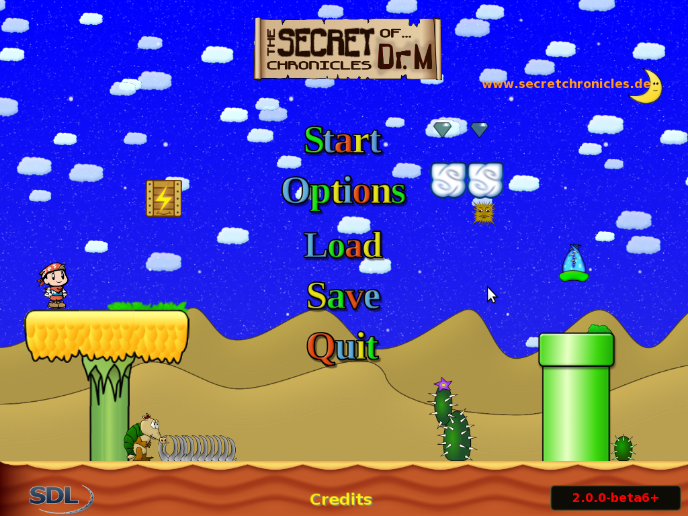

Secretchronicles Wiki
How to Play TSC
This is a guide to help you get started playing TSC. This article does NOT cover how to install TSC.
NOTE:
All of these directions are based on the DEFAULT keymap.
Introduction/Story
TSC Is a 2D sidescrolling platform game that promises high quality graphics, a great story, and an awesome time!! Alex must save the day by killing awfull enemies, passing challenges, and beating bosses.
Have fun, and lets get started!!!!!!
Keymaps
This is the default keymap. Usually you should not have to touch this, unless you don't like the deafult layout. To access it click on OPTIONS then KEYBOARD.
If you want to change the keyboard controls, double click on the setting you want to change, then hit the apropriate key.
To go back to the welcome screen, just hit back.
The Welcome Screen
Now that we have learned our keys, lets move on!
This is the Welcome Screen.

To start playing, click Start, unless You saved a game earlier. If you saved on earlier, click Load, Then select the apropriate slot.
After you click start, You can select to play the overworld, play individual levels, or go through the tutorial. Quit on the main menu will close TSC and return you to your desktop. Options loads your options menu. Save and Load save and load respectively. Please see the next section down for more info on their usage.
How to use Save and Load
You can save Your gameplay for free on any of the worldmaps, or anywhere in a level for 3,000 points. When you want to save a game hit Esc, click on Save. Chose a blank slot, or overwrite one thats already filled then press enter. Once thats done you can press Esc again to return to the game, or Quit to exit. To reload your save, click Load Then select your save slot.
Reading the Worldmap
Navigate in the worldmap using the Arrow keys. When you land on the level you want to play, hit Enter. You can revisit already won levels as many times as you wish.
Playing
This is the actual level. You will have to beat the enemys to find the exit, which may be a door, pipe or other object. To exit the level hit Esc.
Points
Every time you kill an enemy or colect a powerup you get a certian number of points. All the points you make will be added to the Points meter in the top left hand corner of your screen. You need 3,000 points to save your game in the level. Colect as many points as possible, and chose your save locations carefully, because when you spend your 3000 points, you cannot get the points back. If you lose and get a Game over, you lose all your points.
Lives, Game Over
If you get hit,or fall down a gap you will either shrink ( If you colected a powerup earlier) or die. You will be returned to the Worldmap. If you saved the game in the level, you can load that and contine the level from that point. Otherwise, you must restart the level from the beginning. If you have no lives when you die, the Game Over screen will show and he will be returned to the main menu. Any unsaved progress will be lost, so make sure to save after every level you complete in the WorldMap. Alex can increase his number of lives by collecting 100 coins (not points) or finding a 1 up flower.